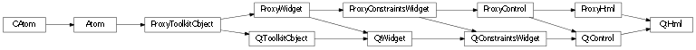
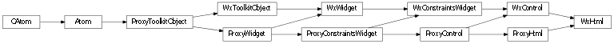

Bases: enaml.widgets.control.Control
An extremely simple widget for displaying HTML.
The Html source code to be rendered.
An html control expands freely in height and width by default.
A reference to the ProxyHtml object

Bases: enaml.qt.qt_control.QtControl, enaml.widgets.html.ProxyHtml
A Qt implementation of an Enaml ProxyHtml widget.
A reference to the widget created by the proxy.

Bases: enaml.wx.wx_control.WxControl, enaml.widgets.html.ProxyHtml
A Wx implementation of the Enaml ProxyHtml widget.
A reference to the widget created by the proxy.